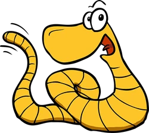
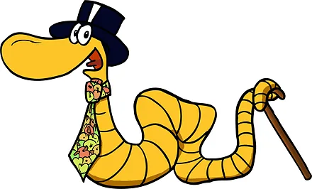
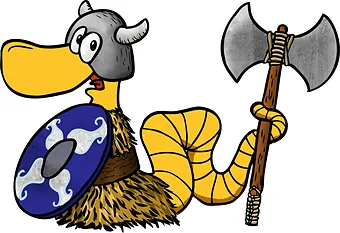
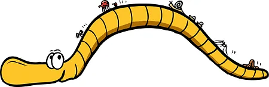
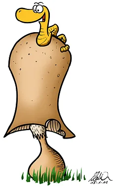
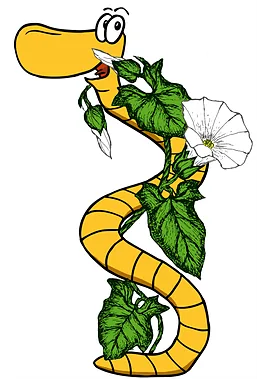
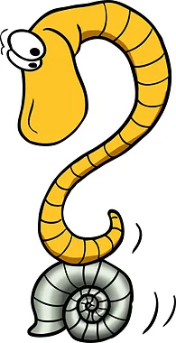
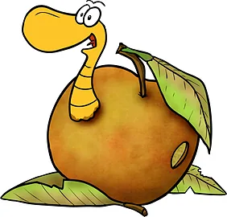
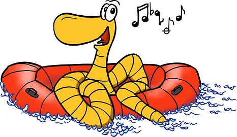
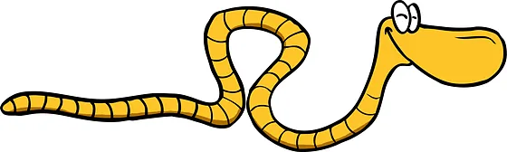

cartoons.de
cartoons.de
Rolli, der Regenwurm – Erlebnis Jungaue
Rolli, der Regenwurm, hat auch einen Ausflug an den Rhein gemacht: Für den Auenerlebnispfad Jungaue in Ingelheim am Rhein habe ich Rolli gezeichnet. Dort begleitet er Groß und Klein auf den Rundwegen durch die Auenlandschaft.
Der Erlebnispfad liegt im Naturschutzgebiet Rheinauen. An 13 Stationen informieren Schautafeln über den Rhein und seine Altrheinarme, dazu kommen 8 Erlebniselemente. Mehr dazu bei Ingelheim erleben (Tourist-Information Ingelheim).
Rolli auf Entdeckungstour


Die Jungaue ist eine Auenlandschaft am Rhein. Auf dem Rundweg gibt es viel zu erfahren: wie sich der Rhein im Lauf der Jahrhunderte verändert hat, was bei Hochwasser passiert und welche Tiere in der Aue leben. Man kann selbst experimentieren, durch ein Fernrohr die Vogelwelt beobachten und vom Turm die Aussicht genießen. Rolli, als Regenwurm ein echter Bodenexperte, passt da bestens hinein.







Comic-Tutorial: So entsteht ein Comic →
← Zurück zu Seite 1: Rolli-Comic-Strips